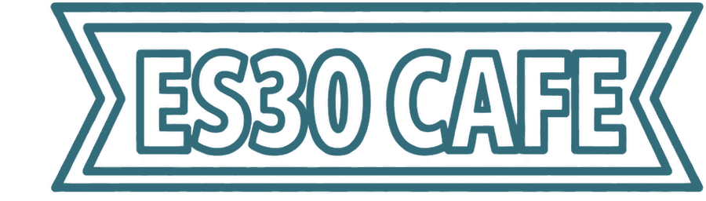
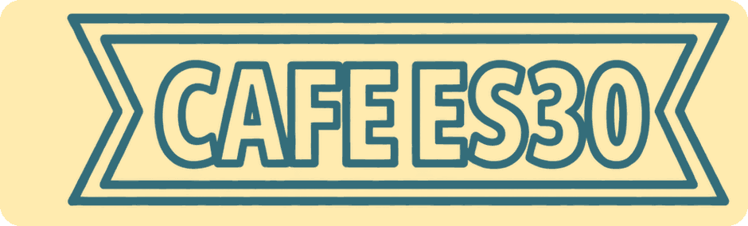

The ES30 Cafe arc


Problem identification & GTM
- Lecture runs during peak lunch hours
- Katie Robinson, Fayyaz Razi, Noah Plattner, and Zeke Wells create ES30 Cafe
- Partner with Professor Rascoff to lead GTM
First hire
- Reham Harrati joins ES30 Cafe as our first intern
Product improvement
- Chamal and Sheldon call the cafe a great example of trying to “learn as much as you can as quickly as you can”
- Changed pricing, menu, and customer experience to improve margins
Co-founder breakup
- Early lesson from David Willabrand meant we had a vesting schedule
- Avoided Garrett's experience at Queue
Together again
- Managed through two weeks of adversity
- Valued Anna Berger's honesty about co-founder dynamics, and got executive coaching